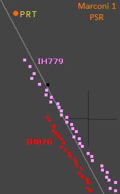
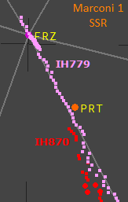
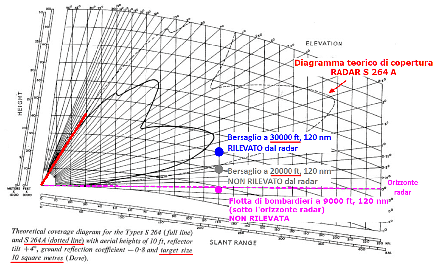
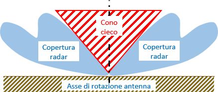
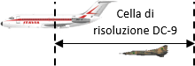
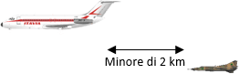
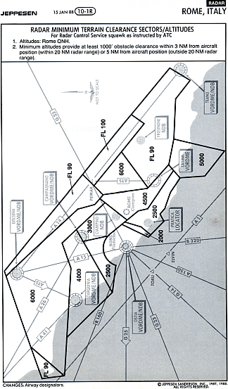

I radar "vedono" tutto
Luogo comune: il mancato rilevamento di velivoli da parte di un radar implica la certezza dell'assenza di velivoli.
Motivazione: l'assenza di tracce radar nei dintorni del DC-9 al momento dell'abbattimento renderebbe ovvia l'impossibilità che l'IH870 possa essere stato abbattuto da un caccia e che ci fosse in zona il MiG-23MS ritrovato in Calabria.
Alcuni degli argomenti qui trattati sono maggiormente dettagliati nella pagina "RADAR e SIF", alla quale si rimanda sia per gli eventuali approfondimenti che per i link di riferimento.
Ai fini della strage di Ustica, sono d'interesse i soli radar di sorveglianza, in quanto i tabulati disponibili sono stati registrati da questo tipo di radar. In questa pagina, quindi, si fa unicamente riferimento ai quattro radar d'aerovia di Roma (due primari e due secondari) e a quelli della Difesa Aerea (sempre di sorveglianza).
L'insussistenza di questa bufala si può dimostrare, come di consueto, mediante l'utilizzo degli elementi oggettivi, in questo caso rappresentati dai tabulati radar di Roma.

Qui sono mostrati i plot registrati dall'estrattore 1 del radar Marconi (quello usato dai controllori).
La cartina mostra i plot rilevati
almeno dal radar primario.
Si nota chiaramente che l'IH870 inizia ad essere rilevato dal radar solo quando è più vicino a Roma dell'IH779.
Più precisamente, l'IH779 inizia ad essere rilevato quando si trova a 120,5 nm dal radar e sta mantenendo circa 25000 ft, mentre l'IH870 inizia ad essere rilevato quando si trova a 109,56 nm dal radar e sta attraversando in salita circa 21600 ft.
Quindi, secondo la bufala oggetto di questa trattazione, l'IH870 dev'essere passato molto distante dalla rotta usata dall'IH779, altrimenti il radar lo avrebbe rilevato, così come ha rilevato il
più piccolo Fokker F28 del volo IH779.
Purtroppo per chi crede a certe frottole, sappiamo, invece, benissimo (dalle comunicazioni T/B/T e dalla carta della partenza strumentale) che entrambi i voli transitano nello stesso tratto Firenze - Bolsena.
Il radar secondario associato al Marconi (il "PLESSEY PIR 100") non fa eccezioni.

Questi sono sempre i plot ricavati dall'estrattore 1, ma ricevuti
almeno dal radar secondario.
Anche in questo caso, si nota chiaramente che l'IH870 inizia ad essere rilevato dal radar solo quando è molto più vicino a Roma dell'IH779.
Più precisamente, l'IH779 inizia ad essere rilevato quando si trova a 147,56 nm dal radar e sta mantenendo circa 25000 ft, mentre l'IH870 inizia ad essere rilevato quando si trova a 125,31 nm dal radar e sta mantenendo circa 19000 ft.
Quindi, sempre secondo la bufala in esame, l'IH870 dev'essere passato molto distante dalla radioassistenza FRZ (Firenze), altrimenti il radar secondario lo avrebbe rilevato, così come ha rilevato il
più piccolo Fokker F28 del volo IH779.
Facendo riferimento alla seconda cartina ("Marconi 1 - SSR"), i sostenitori di questa bufala direbbero che non ci sono aerei intorno all'IH779 fino alla radioassistenza PRT (NDB di Peretola), poiché i tabulati non mostrano niente prima di quel punto, ma, come già detto, sappiamo che questo è certamente falso.
Queste due banali cartine, dunque, sono sufficienti per rendere la bufala oggettivamente infondata. Cerchiamo di capire come stanno le cose.
Il fatto che maggiormente si oppone a questa bufala è spiegato dal diagramma di copertura del radar.

Qui vediamo la copertura verticale teorica del radar Marconi S264A (non è quello usato all'epoca della strage, è solo un esempio) per un bersaglio avente una superficie equivalente di 10 m
2 (come quella di un DC-9).
Risulta evidente che la capacità di rilevare uno stesso bersaglio varia con la quota.
L'esempio mostra che il bersaglio situato a 120 nm dal radar viene rilevato se si trova a 30000 ft, mentre non viene rilevato se si trova a 20000 ft ed è proprio ciò che accade ai due voli Itavia; l'aereo che vola più in basso non viene rilevato, a parità di distanza, nonostante sia più grande. Ciò è vero sia per il radar primario che per quello secondario.
Lo stesso ragionamento si applica in modo identico all'IH779, che non può certo apparire dal nulla. Il radar secondario lo rileva ad una distanza inferiore di 10 nm della portata massima (circa 157 nm). Se il Fokker F28 si fosse trovato ad una quota superiore,
probabilmente sarebbe stato rilevato a partire da una decina di miglia più a nord.
Un'intera flotta di grossi bombardieri situata sempre a 120 nm, ma ad una quota inferiore ai 10000 ft non viene rilevata da nessun radar, poiché si trova al di sotto dell'orizzonte radar.
Il diagramma di copertura mostra anche l'impossibilità di rilevare bersagli troppo vicini al radar; zona demarcata dalla linea rossa.

Ruotando il diagramma di copertura intorno all'asse di rotazione dell'antenna, si ottiene la copertura (teorica) nello spazio tridimensionale.
Così facendo, quella linea rossa forma un cono con il vertice rivolto verso il basso.
All'interno di questo cono (chiamato anche cono di silenzio), il radar non è in grado di rilevare alcun bersaglio.
Anche la vicinanza ad un altro aereo può comportare il mancato rilevamento del bersaglio.

L'immagine mostra un MiG-23 che vola a breve distanza da un DC-9.
Finché la distanza tra i due aerei rimane inferiore a qualche centinaio di metri (500 per il Marconi e 400 per il Selenia), il caccia non compare sugli schermi dei controllori di Roma Radar.
Nel caso specifico del radar Marconi installato a Fiumicino, esiste un ulteriore fenomeno che rende impossibile rilevare un aereo anche se si dovesse trovare al di fuori della cella di risoluzione del DC-9. Questo fenomeno era utilissimo ai caccia che dovevano rendersi invisibili ai controllori del traffico aereo (civile).

In questo caso, il MiG-23 sfrutta il fenomeno del mascheramento generato dal DC-9.
Finché la distanza tra i due aerei rimane inferiore ai 2 km, il caccia non compare sugli schermi dei controllori di Roma Radar.
A volte capita che una bufala dia origine ad un'altra, ancor più ridicola.
In questo caso, il normale modo di funzionare di un radar darebbe origine ad un terribile pericolo per la navigazione aerea.

La cartina aeronautica mostra vari settori radar suddivisi per quota minima di vettoramento e viene pubblicata proprio per tenere conto del funzionamento dei radar, che sono impossibilitati a "vedere" aerei al di sotto di una quota minima.
All'interno dei vari settori è presente la quota minima alla quale un controllore (dell'avvicinamento di Roma, in questo caso) può far volare un aereo.
Oltre che la copertura radar, la quota minima prende chiaramente in considerazione anche l'orografia e tutti gli altri aspetti aeronautici rilevanti (copertura radioassistenze, instradamento del traffico in uscita, ecc).
È, quindi, evidente che le limitazioni di cui soffrono i radar non mettono in alcun modo in pericolo gli aerei, poiché gli specialisti, grazie alla loro competenza, adottano le necessarie misure per ovviare alla possibilità che un radar possa non rilevare un aereo.
Ricapitolando, un radar potrebbe non rilevare un aereo se questo è:
- troppo piccolo in rapporto alla distanza dal radar;
- troppo basso in rapporto alla distanza dal radar;
- troppo alto in rapporto alla distanza dal radar;
- all’interno del cono cieco del radar;
- troppo vicino ad un altro aereo, ma all'esterno della sua cella di risoluzione (sullo schermo compare un solo aereo).
Mentre un radar certamente non rileva un aereo di qualunque dimensione e a qualunque distanza quando questo si trova:
- all'interno della cella di risoluzione di un altro aereo (sullo schermo compare un solo aereo);
- al di sotto dell’orizzonte radar.
Conclusione
Affermare che un radar dimostra la presenza di aerei potrebbe essere corretto (bisogna analizzare cosa esattamente mostra il tabulato o lo schermo), ma affermare che un radar dimostra l'assenza di aerei è sempre sbagliato.
Quindi, dire che i radar non mostrano aerei intorno al DC-9 per un raggio di circa 60 nm è corretto, ma dire che i radar dimostrano l'assenza di aerei intorno al DC-9 per un raggio di circa 60 nm è sbagliato.
Per quanto detto ed oggettivamente dimostrato, nelle immediate vicinanze del DC-9 potevano essere presenti altri aerei nel momento dell'abbattimento, sia alla stessa quota che a quote inferiori.
A quota superiore, la probabilità di rilevamento aumenta, quindi è probabile che gli eventuali aerei presenti si trovassero a quota inferiore.